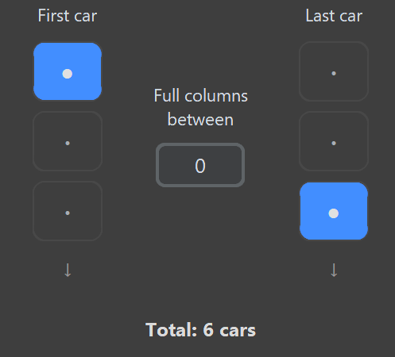

第三部分 — 熟練度樹自動化
從熟練度樹自動解鎖幸運轉盤
此功能不限於 22B-STI。只要為目標車輛設定熟練度樹路徑，再選擇連續的車庫範圍，FAFE 就能自動處理這些車輛。
適用於任何相容車輛：選定車輛應使用你所設定的熟練度樹路徑。請勿在同一次執行中混合熟練度樹配置或解鎖路徑不同的車輛。
1
準備車輛
將要處理的車輛排列成一個連續車庫範圍。FAFE 會由上而下、逐欄移動，因此範圍內不要夾雜無關車輛；車庫其他位置的車輛不必刪除。
2
依「最近新增」排序
在車庫畫面按 X 開啟排序選單，選擇最近新增。FAFE 每完成一輛車後會自動重新排序。
3
停在「我的住所」車庫
讓遊戲停在我的住所裡的車庫畫面，而不是嘉年華大世界選單，並將第一輛要處理的車放在左上角。

第一輛選定車輛從左上角開始；範圍內可放置任何相容車輛。
4
設定熟練度樹路徑
在 FAFE 的解鎖路徑格狀圖中，標記通往目標車輛幸運轉盤獎勵所需的節點。FAFE 會使用 WASD＋Enter 沿路徑解鎖，不需要擷取節點圖片。
5
選擇車庫範圍
用 First car 選擇第一輛車所在列、用 Last car 選擇最後一輛車所在列，再以 Full columns between 設定兩者之間的完整欄數。藍色圓點代表已選位置，Total 會顯示 FAFE 將處理的車輛總數。

此範例選擇第一輛車的第一列、最後一輛車的第三列，中間完整欄數為 0，因此總共處理 6 輛車。
6
開始自動化
開啟側邊欄的 ⭐ 解鎖轉輪，點選 ▶ 開始或按 F9，再於倒數期間切回 Forza。
7
讓 FAFE 處理整個範圍
FAFE 會逐車進入、開啟車輛熟練度、解鎖設定節點、返回車庫並移至下一輛，直到完成選定範圍。